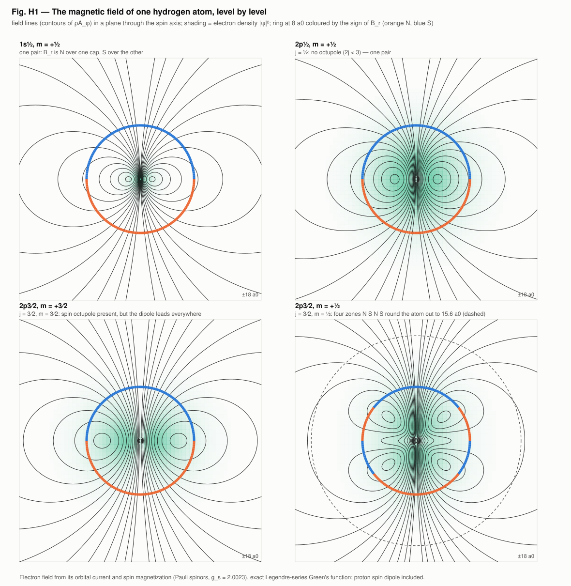
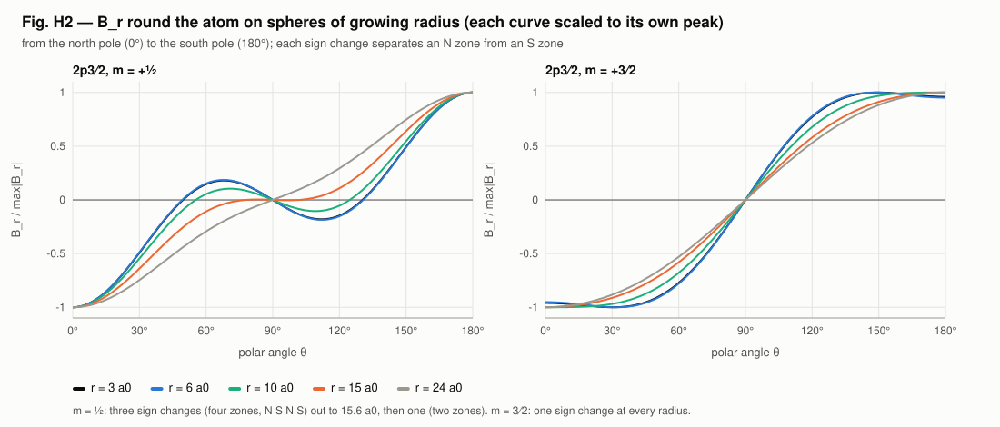
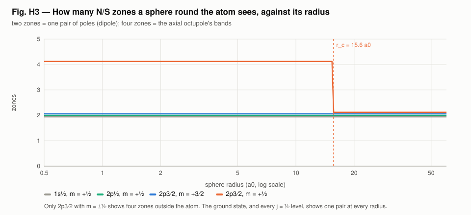
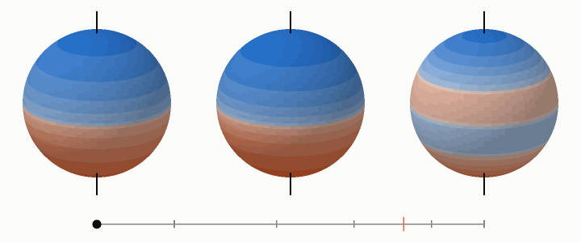
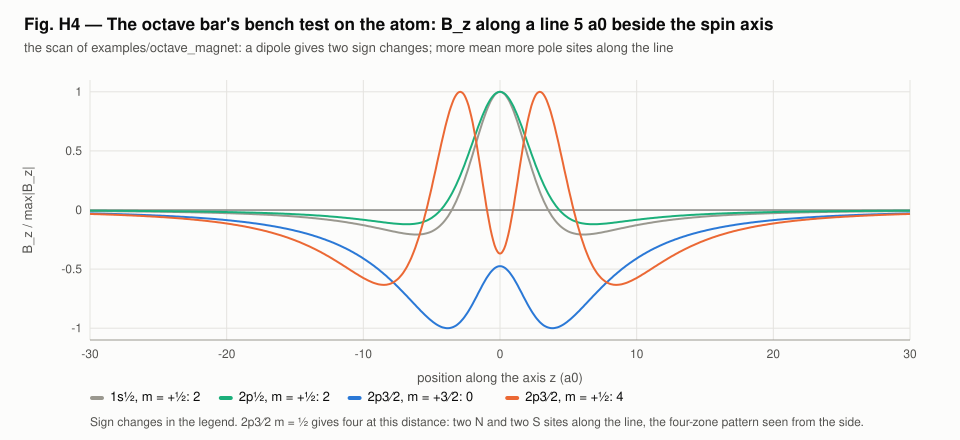

<!-- SPDX-License-Identifier: GPL-3.0-only OR LicenseRef-kronspice-Commercial -->
<!-- Copyright (C) 2026 Franklin Amador -->
<meta charset="utf-8">
<meta name="viewport" content="width=device-width, initial-scale=1, viewport-fit=cover">
<title>Hydrogen Atom Poles</title>
<meta name="claude:viewport-fit-sides" content="cover">
<link rel="preconnect" href="https://fonts.googleapis.com">
<link rel="stylesheet" href="https://fonts.googleapis.com/css2?family=IBM+Plex+Sans:ital,wght@0,400;0,500;0,600;1,400&family=IBM+Plex+Mono:wght@400;500&family=IBM+Plex+Serif:wght@500;600&display=swap">
<style>
/* Layout: one reading column (~68ch) with figures allowed to run wider; a lab-report masthead; sections follow the run's Parts. */
:root {
  --bg: #f6f7f8;
  --paper: #ffffff;
  --fg: #16191d;
  --muted: #59606a;
  --rule: #dde1e6;
  --accent: #2a78d6;   /* S, and the figures' blue */
  --north: #d9582a;    /* N, the figures' orange */
  --code-bg: #eef1f4;
  --display: "IBM Plex Serif", Georgia, "Times New Roman", serif;
  --body: "IBM Plex Sans", "Segoe UI", system-ui, -apple-system, sans-serif;
  --mono: "IBM Plex Mono", ui-monospace, "Cascadia Mono", Consolas, monospace;
}
@media (prefers-color-scheme: dark) {
  :root:not([data-theme="light"]) {
    --bg: #111418; --paper: #181c21; --fg: #e6e9ed; --muted: #9aa3ad; --rule: #2b3139;
    --accent: #5b9be6; --north: #ee7f52; --code-bg: #1f252c; color-scheme: dark;
  }
}
:root[data-theme="dark"] {
  --bg: #111418; --paper: #181c21; --fg: #e6e9ed; --muted: #9aa3ad; --rule: #2b3139;
  --accent: #5b9be6; --north: #ee7f52; --code-bg: #1f252c; color-scheme: dark;
}
* { box-sizing: border-box; }
body {
  background: var(--bg); color: var(--fg); font-family: var(--body);
  font-size: 1rem; line-height: 1.6; margin: 0;
  padding-left: max(16px, env(safe-area-inset-left, 0px));
  padding-right: max(16px, env(safe-area-inset-right, 0px));
}
main { max-width: 68rem; margin: 0 auto; padding-block: 2.5rem 4rem; display: grid; gap: 2.75rem; }
.col { max-width: 44rem; display: grid; gap: 0.9rem; min-width: 0; }
header.mast { display: grid; gap: 0.6rem; border-bottom: 1px solid var(--rule); padding-bottom: 1.6rem; }
.eyebrow { font-family: var(--mono); font-size: 0.78rem; letter-spacing: 0.08em; text-transform: uppercase; color: var(--muted); }
h1, h2, h3 { font-family: var(--display); font-weight: 600; line-height: 1.2; text-wrap: balance; margin: 0; }
h1 { font-size: clamp(1.9rem, 4.5vw, 2.7rem); }
h2 { font-size: 1.55rem; }
h3 { font-size: 1.12rem; font-family: var(--body); font-weight: 600; }
p { margin: 0; }
.lede { font-size: 1.1rem; color: var(--muted); max-width: 44rem; }
blockquote { margin: 0; padding: 0.2rem 0 0.2rem 1rem; border-left: 3px solid var(--north); font-family: var(--display); font-size: 1.15rem; font-style: italic; }
.meta { display: flex; flex-wrap: wrap; gap: 0.4rem 1.4rem; font-family: var(--mono); font-size: 0.82rem; color: var(--muted); }
.n { color: var(--north); font-weight: 600; }
.s { color: var(--accent); font-weight: 600; }
section { display: grid; gap: 1.2rem; }
.part { display: flex; align-items: baseline; gap: 0.8rem; }
.part .num { font-family: var(--mono); font-size: 0.85rem; color: var(--muted); }
ul { margin: 0; padding-left: 1.2rem; display: grid; gap: 0.35rem; }
code { font-family: var(--mono); font-size: 0.88em; background: var(--code-bg); padding: 0.05em 0.35em; border-radius: 3px; }
pre { margin: 0; background: var(--code-bg); padding: 0.9rem 1rem; border-radius: 6px; overflow-x: auto; font-family: var(--mono); font-size: 0.85rem; line-height: 1.5; }
.tablewrap { overflow-x: auto; }
table { border-collapse: collapse; width: 100%; font-size: 0.92rem; font-variant-numeric: tabular-nums; }
th, td { text-align: left; padding: 0.5rem 0.75rem 0.5rem 0; border-bottom: 1px solid var(--rule); vertical-align: top; }
th { font-weight: 600; font-size: 0.8rem; letter-spacing: 0.03em; color: var(--muted); }
td.num { font-family: var(--mono); font-size: 0.88rem; white-space: nowrap; }
figure { margin: 0; display: grid; gap: 0.55rem; }
figure .plate { background: #fcfcfb; border: 1px solid var(--rule); border-radius: 6px; padding: 0.4rem; overflow-x: auto; }
figure img { display: block; width: 100%; height: auto; max-width: 100%; }
figcaption { font-size: 0.88rem; color: var(--muted); max-width: 52rem; }
figcaption b { color: var(--fg); font-weight: 600; }
.pair { display: grid; grid-template-columns: repeat(auto-fit, minmax(min(100%, 20rem), 1fr)); gap: 1.2rem; }
.pair figure .plate { padding: 0; }
.status { display: grid; gap: 0.5rem; padding: 1.1rem 1.25rem; background: var(--paper); border: 1px solid var(--rule); border-left: 4px solid var(--accent); border-radius: 6px; }
.status .label { font-family: var(--mono); font-size: 0.78rem; letter-spacing: 0.08em; text-transform: uppercase; color: var(--muted); }
footer { border-top: 1px solid var(--rule); padding-top: 1.4rem; display: grid; gap: 0.8rem; font-size: 0.9rem; color: var(--muted); }
a { color: var(--accent); }
a:focus-visible { outline: 2px solid var(--accent); outline-offset: 2px; }
@media (prefers-reduced-motion: reduce) { .gif-note::after { content: " (animations play as GIFs; pause them in your browser if needed)"; } }
</style>

<main>
  <header class="mast">
    <span class="eyebrow">kronspice · examples/hydrogen_poles · hypothesis H34, Parts 1–2 · 5 November 2026</span>
    <h1>How many magnetic poles does a hydrogen atom have?</h1>
    <blockquote>“A bar magnet has four pairs of poles — not one pair.”<br><span style="font-size:0.85rem;font-style:normal;font-family:var(--body);color:var(--muted)">Walter Russell, “Analysis of the Octave Bar Magnet” (painting), read here as hydrogen</span></blockquote>
    <p class="lede">The magnetic field of one hydrogen atom, computed level by level from the electron's orbital current and spin, with the proton's spin beside it, and read the way a bench would read it: by counting N and S zones round the atom.</p>
    <div class="meta"><span>Status: <b>bounded</b></span><span>Ground state: one pair</span><span>Four pairs: 2p3⁄2, m = ±½</span><span>Companion: <a href="h2_report.html">two atoms, H₂</a></span></div>
  </header>

  <section>
    <div class="col">
      <h2>What “four pairs” means for an atom</h2>
      <ul>
        <li><b>Poles come in powers of two.</b> A dipole has one pair; an octupole (2³ poles) has four. “Four pairs, not one pair” is the octupole against the dipole.</li>
        <li><b>No two-pair state.</b> A hydrogen state of definite parity, which every state is, has no magnetic quadrupole. Its magnetic poles come as one pair or four, never two.</li>
        <li><b>Four pairs need a higher state.</b> A magnetic 2<sup>k</sup>-pole needs 2j ≥ k. The ground state (1s, j = ½) can carry only one pair. Four pairs first become possible in 2p3⁄2 (j = 3⁄2).</li>
        <li><b>What a bench would see.</b> On a sphere round the atom, an axial octupole shows as four alternating zones of B<sub>r</sub> (<span class="n">N</span> <span class="s">S</span> <span class="n">N</span> <span class="s">S</span> from pole to pole); a dipole shows two.</li>
      </ul>
    </div>
  </section>

  <section>
    <div class="col">
      <div class="part"><span class="num">Part 1</span><h2>The atom's magnetism, level by level</h2></div>
      <p>The electron is a Pauli spinor |n l j m⟩, coupled with Clebsch–Gordan coefficients from the hydrogen radial functions. Its magnetism has two sources: the orbital current, and the spin magnetization −(g<sub>s</sub>/2)μ<sub>B</sub> ψ†σψ with g<sub>s</sub> = 2.002319. Both enter as one azimuthal current, whose field is computed exactly from the Legendre-series Green's function. The proton's spin dipole, 1.52×10⁻³ μ<sub>B</sub>, sits at the centre.</p>
      <div class="tablewrap"><table>
        <thead><tr><th>Level</th><th>Dipole (μ<sub>B</sub>)</th><th>Landé −g<sub>j</sub>m<sub>j</sub></th><th>Octupole (μ<sub>B</sub>·a0²)</th><th>Pole pattern round the atom</th></tr></thead>
        <tbody>
          <tr><td>1s½, m = ½</td><td class="num">−1.001160</td><td class="num">−1.001160</td><td class="num">0</td><td>2 zones (one pair) at every radius</td></tr>
          <tr><td>2p½, m = ½</td><td class="num">−0.332947</td><td class="num">−0.332947</td><td class="num">0</td><td>2 zones at every radius</td></tr>
          <tr><td>2p3⁄2, m = 3⁄2</td><td class="num">−2.001160</td><td class="num">−2.001160</td><td class="num">+18.0209</td><td>2 zones at every radius</td></tr>
          <tr><td>2p3⁄2, m = ½</td><td class="num">−0.667053</td><td class="num">−0.667053</td><td class="num">−54.0626</td><td><b>4 zones out to 15.6 a0</b>, then 2</td></tr>
        </tbody>
      </table></div>
      <p>The octupole comes entirely from the electron's spin magnetization; the l = 1 orbital current carries none.</p>
    </div>
    <figure>
      <div class="plate"></div>
      <figcaption><b>Fig. H1.</b> Field lines of each level in a plane through the spin axis, over the electron density. The ring at 8 a0 is coloured by the sign of B<sub>r</sub>, <span class="n">orange N</span> and <span class="s">blue S</span>. Only 2p3⁄2 with m = ½ shows four zones; the dashed circle marks 15.6 a0, where its four zones end.</figcaption>
    </figure>

  </section>

  <section>
    <div class="col">
      <div class="part"><span class="num">Part 2</span><h2>Counting the poles</h2></div>
      <p>The pole count is read on spheres of growing radius round the atom. Each sign change of B<sub>r</sub> from pole to pole separates an N zone from an S zone.</p>
      <ul>
        <li><b>Outside the electron cloud,</b> the octupole leads inside a radius r<sub>c</sub> = √(3m₃/m₁), or √(−2m₃/m₁) when the ratio is negative. Beyond it the dipole leads, because it falls as 1/r³ and the octupole as 1/r⁵.</li>
        <li><b>2p3⁄2, m = ½:</b> r<sub>c</sub> = 15.6 a0, well outside most of the cloud, and four zones appear from 0.5 to 15.4 a0.</li>
        <li><b>2p3⁄2, m = 3⁄2:</b> r<sub>c</sub> = 4.25 a0 lies inside the cloud, where the field is not the exterior expansion, and no four-zone pattern appears at any radius.</li>
      </ul>
    </div>
    <figure>
      <div class="plate"></div>
      <figcaption><b>Fig. H2.</b> B<sub>r</sub> from north pole to south pole on spheres of 3 to 24 a0. For m = ½ the curve crosses zero three times out to 15.6 a0 (four zones), then once. For m = 3⁄2 it crosses once at every radius.</figcaption>
    </figure>

    <figure>
      <div class="plate"></div>
      <figcaption><b>Fig. H3.</b> Zones against sphere radius. Two zones (one pair) for the ground state and every j = ½ level; four for 2p3⁄2 m = ½ out to r<sub>c</sub> = 15.6 a0.</figcaption>
    </figure>

    <div class="pair">
      <figure>
        <div class="plate"></div>
        <figcaption><b>Animation.</b> Spheres round 2p½ (left), 2p3⁄2 m = 3⁄2 (middle) and 2p3⁄2 m = ½ (right), coloured by B<sub>r</sub>: <span class="n">orange N</span>, <span class="s">blue S</span>, deeper where stronger. The radius sweeps from 1 to 32 a0 and back; the dot on the bar shows it on a log scale, and the orange tick marks 15.6 a0. The right-hand sphere carries four bands until the dot passes the tick, then two.</figcaption>
      </figure>
    <figure>
      <div class="plate"></div>
      <figcaption><b>Fig. H4.</b> The octave bar's own bench test on the atom: B<sub>z</sub> along a line 5 a0 beside the spin axis. A dipole gives two sign changes; 2p3⁄2 m = ½ gives four.</figcaption>
    </figure>

    </div>
  </section>

  <section>
    <div class="col">
      <h3>Checks</h3>
      <div class="tablewrap"><table>
        <thead><tr><th>Check</th><th>Result</th></tr></thead>
        <tbody>
          <tr><td>Normalization ∫|ψ|², every level</td><td class="num">1 to 10⁻⁸</td></tr>
          <tr><td>Dipole against the Landé value −g<sub>j</sub>m<sub>j</sub>μ<sub>B</sub></td><td class="num">equal to 10⁻⁸</td></tr>
          <tr><td>Even-l moments (parity)</td><td class="num">≤ 4×10⁻¹⁰</td></tr>
          <tr><td>Octupole of the j = ½ levels (2j ≥ k)</td><td class="num">≤ 10⁻¹¹</td></tr>
          <tr><td>Wigner–Eckart: octupole(m = ½)/octupole(m = 3⁄2), theory −3</td><td class="num">−3.000000</td></tr>
          <tr><td>Series field against a direct sum of 1.28 million current loops</td><td class="num">2.4×10⁻⁴</td></tr>
        </tbody>
      </table></div>
      <p>The example's tests (<code>main_test.go</code>) pass, including under the race detector.</p>
    </div>
  </section>

  <section>
    <div class="col">
      <div class="status">
        <span class="label">What it means for H34</span>
        <p>Read as one hydrogen atom, Russell's “four pairs, not one pair” has a precise meaning. Ground-state hydrogen has one pair, and so does every j = ½ level. Four pairs first appear in the excited 2p3⁄2 level, which with m = ±½ shows four N S N S zones round the atom out to 15.6 a0. The octupole is the electron's spin magnetization spread over a 2p orbital.</p>
        <p>An excited atom's magnetic octupole has not been measured for hydrogen, to our knowledge; its spin-½ proton has no octupole for the electron's to couple to. The two-atom reading is in the <a href="h2_report.html">H₂ report</a>.</p>
      </div>
    </div>
  </section>

  <footer>
    <div class="col">
      <span class="eyebrow">Reproduce</span>
      <pre>go run ./examples/hydrogen_poles -svg examples/hydrogen_poles/viz
go test ./examples/hydrogen_poles</pre>
      <span class="eyebrow">Sources</span>
      <ul>
        <li>W. Russell, “Analysis of the Octave Bar Magnet” (painting). The hypothesis source; the painting and its other readings are in <code>doc/russell-octave-report.md</code>.</li>
        <li>J. D. Jackson, <i>Classical Electrodynamics</i>, 3rd ed., §5.5–5.6.</li>
        <li>J. J. Sakurai, <i>Modern Quantum Mechanics</i>, §3.8, §3.11.</li>
        <li>CODATA 2018 values of μ<sub>B</sub>, a0, g<sub>s</sub> and μ<sub>p</sub>.</li>
      </ul>
    </div>
  </footer>
</main>
